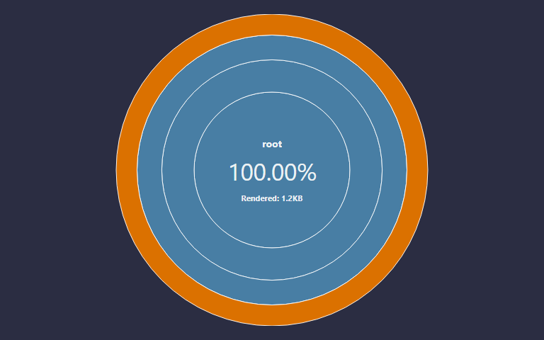
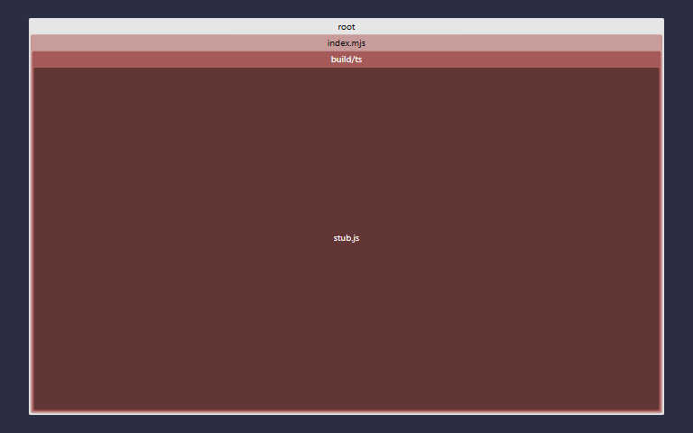
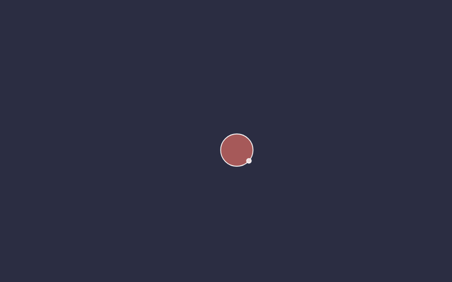
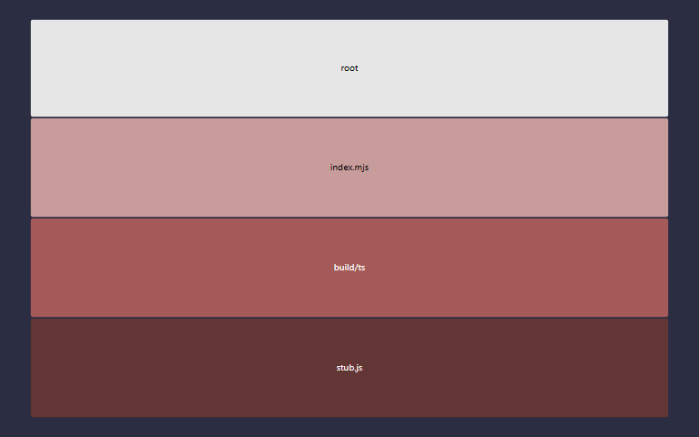

react_ts_with_claude_gh_template
react_ts_with_claude_gh_template v0.20.4
Version 0.20.4 was built on Friday, June 5, 2026 at GMT-07:00
1780725270359from hash34b4b4c.
TODO Put the project description here, please.
Test status
| Count | Statement | Branch | Func | Line | |
|---|---|---|---|---|---|
| Unit | 39 | 66.66% | {{unitbranch}}% | {{unitfunc}}% | {{unitline}}% |
| Stochastic | 4 | 66.66% | {{stochbranch}}% | {{stochfunc}}% | {{stochline}}% |
| Docblock count | 50% | |
|---|---|---|
| Docblock coverage | 2 | 50% |

 |
 |
 |
 |
How to use this template
Before invoking it
- [ ] Decide whether to
- Update the deps in the template recommended
- Update the deps post-install
- Let the deps be out of date
After invoking it
- [ ] Reset package version
- [ ] Turn Github Pages on, and point it at
master//docs - [ ] Set up the auth token
TODO_TOKEN_FOR_GH_CI_CDafter renaming it in ci.yml - [ ] Change all the
react_ts_with_claude_gh_templates in this file's top block links - [ ] Change all the
react_ts_with_claude_gh_templates inpackage.json - [ ] Change the
react_ts_with_claude_gh_templateinverify_version_bump.js - [ ] Write or copy-paste the description in
package.json - [ ] Search for all remaining TODOs
- [ ] Update meta tags and TODOs in
src/html/index.html - [ ] Write a
base-README.md - [ ] Change all the
react_ts_with_claude_gh_templates inrollup.config.js - [ ] Decide whether to
- re-add a
binblock topackage.json, or - remove the
binconfig fromrollup.config.js
- re-add a
- [ ]
npm install && npm run build- Maybe update the deps?
- Handle the MAYBE-REMOVEs in the HTML HEAD
- [ ] Change src/html/index.html 's
</li> <li>[ ] Maybe replace src/html/favicon.png</li> </ol> </li> <li>[ ] commit and vroom</li> </ol> <p> </p> <p> </p> <h2 id="license" class="tsd-anchor-link">License<a href="#license" aria-label="Permalink" class="tsd-anchor-icon"><svg viewBox="0 0 24 24" aria-hidden="true"><use href="assets/icons.svg#icon-anchor"></use></svg></a></h2> <p>MIT</p> </div></div><div class="col-sidebar"><div class="page-menu"><div class="tsd-navigation settings"><details class="tsd-accordion"><summary class="tsd-accordion-summary"><svg width="20" height="20" viewBox="0 0 24 24" fill="none" aria-hidden="true"><use href="assets/icons.svg#icon-chevronDown"></use></svg><h3>Settings</h3></summary><div class="tsd-accordion-details"><div class="tsd-filter-visibility"><span class="settings-label">Member Visibility</span><ul id="tsd-filter-options"><li class="tsd-filter-item"><label class="tsd-filter-input"><input type="checkbox" id="tsd-filter-protected" name="protected"/><svg width="32" height="32" viewBox="0 0 32 32" aria-hidden="true"><rect class="tsd-checkbox-background" width="30" height="30" x="1" y="1" rx="6" fill="none"></rect><path class="tsd-checkbox-checkmark" d="M8.35422 16.8214L13.2143 21.75L24.6458 10.25" stroke="none" stroke-width="3.5" stroke-linejoin="round" fill="none"></path></svg><span>Protected</span></label></li><li class="tsd-filter-item"><label class="tsd-filter-input"><input type="checkbox" id="tsd-filter-inherited" name="inherited" checked/><svg width="32" height="32" viewBox="0 0 32 32" aria-hidden="true"><rect class="tsd-checkbox-background" width="30" height="30" x="1" y="1" rx="6" fill="none"></rect><path class="tsd-checkbox-checkmark" d="M8.35422 16.8214L13.2143 21.75L24.6458 10.25" stroke="none" stroke-width="3.5" stroke-linejoin="round" fill="none"></path></svg><span>Inherited</span></label></li><li class="tsd-filter-item"><label class="tsd-filter-input"><input type="checkbox" id="tsd-filter-external" name="external"/><svg width="32" height="32" viewBox="0 0 32 32" aria-hidden="true"><rect class="tsd-checkbox-background" width="30" height="30" x="1" y="1" rx="6" fill="none"></rect><path class="tsd-checkbox-checkmark" d="M8.35422 16.8214L13.2143 21.75L24.6458 10.25" stroke="none" stroke-width="3.5" stroke-linejoin="round" fill="none"></path></svg><span>External</span></label></li></ul></div><div class="tsd-theme-toggle"><label class="settings-label" for="tsd-theme">Theme</label><select id="tsd-theme"><option value="os">OS</option><option value="light">Light</option><option value="dark">Dark</option></select></div></div></details></div><details open class="tsd-accordion tsd-page-navigation"><summary class="tsd-accordion-summary"><svg width="20" height="20" viewBox="0 0 24 24" fill="none" aria-hidden="true"><use href="assets/icons.svg#icon-chevronDown"></use></svg><h3>On This Page</h3></summary><div class="tsd-accordion-details"><a href="#react_ts_with_claude_gh_template-v0204"><span>react_<wbr/>ts_<wbr/>with_<wbr/>claude_<wbr/>gh_<wbr/>template v0.20.4</span></a><ul><li><a href="#test-status"><span>Test status</span></a></li><li><a href="#how-to-use-this-template"><span>How to use this template</span></a></li><li><ul><li><a href="#before-invoking-it"><span>Before invoking it</span></a></li><li><a href="#after-invoking-it"><span>After invoking it</span></a></li></ul></li><li><a href="#license"><span>License</span></a></li></ul></div></details></div><div class="site-menu"><nav class="tsd-navigation"><a href="modules.html">react_ts_with_claude_gh_template</a><ul class="tsd-small-nested-navigation" id="tsd-nav-container"><li>Loading...</li></ul></nav></div></div></div><footer><p class="tsd-generator">Generated using <a href="https://typedoc.org/" target="_blank">TypeDoc</a></p></footer><div class="overlay"></div></body></html>
- [ ] Change src/html/index.html 's